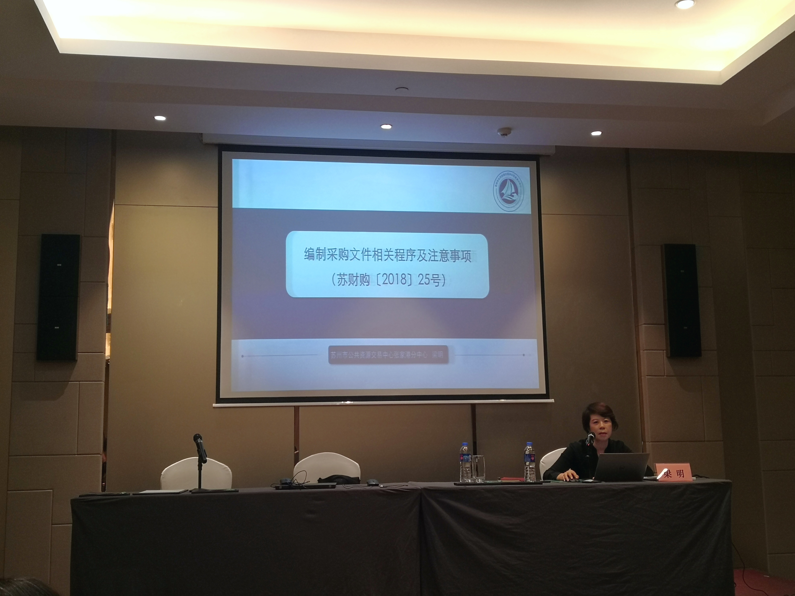

【信息发布时间：2020-10-19阅读次数：】 【我要打印】 【关闭】
为进一步提升相关业务人员政策理论水平，丰富业务人员的实践操作经验，苏州市公共资源交易中心张家港分中心于10月12日至10月16日派员参加了苏州市政府集中采购业务培训。
本次培训内容主要是关于政府采购法律法规及业务理论的培训，课程内容丰富充实，形式新颖生动，既有思想政治上的引领，又有业界精英的专业指导，从提高政治思想站位、业务理论水平及实操水平等多方面共同发力，并为参加培训的人员答疑释惑，开拓了各参训人员的视野和思路。
在培训期间的授课环节中，我中心副主任梁明就编制采购文件相关程序及注意事项进行发言，并为参训人员分享了多年来政府采购业务的相关经验和心得，获得了与会人员的一致认可。
培训还设有交流环节，为参加培训的人员提供充足的时间就相关问题进行深入探讨，促进相互之间的学习交流与经验分享，并对近一周的学习进行总结，以便今后更好地开展政府采购相关工作。
此次培训将进一步规范我中心政府集中采购业务，促进我市政府集中采购工作的深入发展。
